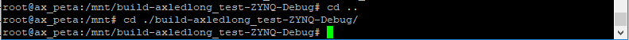
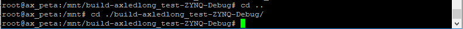
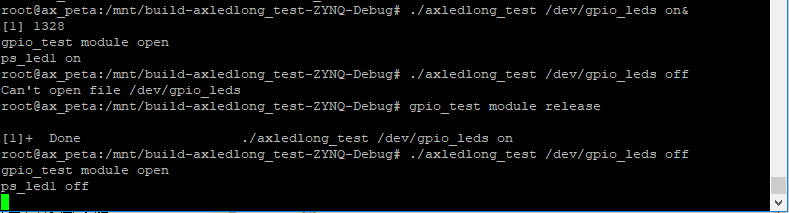

并发的处理#
Linux这样的多任务操作系统，都无法避免并发的问题。这一章我们简单了解并发和并发的处理方式。
Linux中的并发#
所谓并发就是指多个任务同时访问同一个资源，内存就是资源。内存出错，很有可能导致系统崩溃，所以必须要极力避免并发问题的发生。
并发访问产生的原因众多，比如多线程访问、抢占、中断等等，这些都是系统机制很难避免。要避免并发访问带来的问题，不如去识别出会被同时访问的共享资源以及会访问共享资源的程序即临界区，并做好保护。当然很多时候识别出需要保护的资源并非易事，这我们只能从不断的积累中去总结。
Linux对并发的处理#
识别出共享资源后，我们就可以使用Linux内核提供的保护共享资源机制来避免并发访问。这节我们介绍几种内核提供的并发处理方法。
原子操作#
原子操作是指不能被分割或打断的操作，Linux内核提供了原子变量和系列函数来实现原子操作。文件include/linux/types.h中，原子变量定义如下：
typedef struct {
int counter;
} atomic_t;
定义原子变量的方式为：
atomic_t a = ATOMIC_INIT(x);
ATOMIC_INIT(x)是用于原子变量初始化的宏定义，x是我们赋予的初值，不需要的初值的话可以省略。
原子变量的读写操作也要内核提供的接口函数，除了上面说的ATOMIC_INIT(x)外，还有些常用的接口函数如下：
/* 读取v并且返回 */
int atomic_read(atomic_t *v);
/* 把i写入v */
void atomic_set(atomic_t *v, int i);
/* v的值减去i */
void atomic_add(int i, atomic_t *v);
/* v的值加上i */
void atomic_sub(int i, atomic_t *v);
/*自增 */
void atomic_inc(atomic_t *v);
/* v 自减 */
void atomic_dec(atomic_t *v);
/* v自增并返回 */
int atomic_inc_return(atomic_t *v);
/* v自减并返回 */
int atomic_dec_return(atomic_t *v);
当然还不止这些，除了对整型的操作，内核还提供了原子的位操作，等需要的时候再去了解吧。具体用法也放到之后的实验中再去分析。
锁机制#
原子操作只能对整形变量和位起到保护作用，很多场景都不适用。比如需要保护结构多变的结构体变量时就需要用到其他的机制，比如这节要讲的锁机制。内核中的锁也用很多种，先介绍一种常用的自旋锁。
自旋锁的机制是，某个线程要访问共享资源时，需要先获取相应的锁即上锁，只要不释放这个锁即解锁，别的线程就无法获取锁也就无法访问共享资源。此时需要却没有获取到自旋锁的线程就会一直处于等带状态(阻塞)。线程的等待状态会浪费很多处理器资源，所以占用自旋锁的临界区要尽量的轻便，更不能调用或存在阻塞的函数或逻辑。
所是一个形象比喻，说到底，也就是个结构体，定义如下：
typedef struct spinlock {
union {
struct raw_spinlock rlock;
#ifdef CONFIG_DEBUG_LOCK_ALLOC
# define LOCK_PADSIZE (offsetof(struct raw_spinlock, dep_map))
struct {
u8 __padding[LOCK_PADSIZE];
struct lockdep_map dep_map;
};
#endif
};
} spinlock_t;
同样的有了数据结构，还得有相应的操作函数，常用的自旋锁接口函数有：
/*自旋锁初始化 */
int spin_lock_init(spinlock_t *lock);
/*获取自旋锁 */
void spin_lock(spinlock_t *lock);
/*释放自旋锁 */
void spin_unlock(spinlock_t *lock);
/*获取自旋锁，没有获取到则返回0 */
int spin_trylock(spinlock_t *lock);
/*检查自旋锁是否已被获取，返回0则已被获取，其他值则未被获取 */
int spin_is_locked(spinlock_t *lock);
/*禁用本地中断，并获取自旋锁 */
void spin_lock_irq(spinlock_t *lock);
/*恢复本地中断，并释放自旋锁 */
void spin_unlock_irq(spinlock_t *lock);
/*保存中断状态，禁用本地中断，并获取自旋锁，flags为中断状态 */
void spin_lock_irqsave(spinlock_t *lock, unsigned long flags);
/*恢复中断至保存的状态，恢复本地中断，并获释放旋锁 */
void spin_unlock_irqrestore(spinlock_t *lock, unsigned long flags;
使用自旋锁，需要注意：
使用自旋锁的临界区必定不能进入休眠。自旋锁被成功获取后，内核会停用抢占机制。假如现在有个临界区A获取了自旋锁，然后进入休眠主动放弃了CPU使用权，线程B开始运行。线程B的临界区也想访问共享数据，但是自旋锁已被占用，B线程的临界区就一直处于等待自旋锁的状态，而此时内核抢占被禁止，临界区A无法获得主动权释放锁，从而发生了死锁。
临界区内要避免中断抢占。假设现在有线程获取了自旋锁，在释放之前，被中断抢占了，如果中断也需要获取共享数据，也去申请自旋锁，那中断就会进入等待状态，那就大事不妙了，直接死锁。这里要避免终端抢占的办法，就是使用上面介绍的spin_lock_irq函数和spin_lock_irqsave函数来申请自旋锁，禁用本地中断。
临界区要尽量短。原因上面有解释过了。
使用示例：
spinlock_t lock;
spin_lock (&gpioled.lock); //上锁
/* 临界区 */
spin_unlock (&gpioled.lock); //解锁
上锁和解锁中间就是临界区。
信号量#
与自旋锁相比，信号量有两个优势：
信号量可以让等待信号量的线程进入休眠，减少CPU的占用；
信号量支持对个线程同时访问共享资源。
信号量结构体定义如下：
struct semaphore {
raw_spinlock_t lock;
unsigned int count;
struct list_head wait_list;
};
元素count即指信号量支持同时访问共享资源的线程数。
常用的信号量接口函数有：
/* 初始化信号量，设置信号值(同时访问个数)为val */
void sema_init(struct semaphore *sem, int val);
/* 获取信号量，失败时会进入休眠且不可以被信号打断，不能用于中断 */
void down(struct semaphore *sem);
/* 获取信号量，不会进入休眠，成功返回0 */
int down_trylock(struct semaphore *sem);
/* 获取信号量，失败时会进入休眠但可以被信号打断，不能用于中断，休眠被打断时返非0值 */
int down_interruptible(struct semaphore *sem);
/* 释放信号量 */
void up(struct semaphore *sem);
使用信号量要注意的地方：
线程休眠后会切换线程，如果占用信号量的临界区很短，导致频繁切换线程，也会带来大量的开销，因此与自旋锁相反，信号量不适用于共享资源使用时间很短的场合；
中断不能休眠，因此中断中不能使用会进入休眠的方式申请信号量；
信号量允许多个线程同时访问共享资源时(count > 1)，不可用于互斥访问(互斥访问指一次只能有一个线程访问共享资源)。
使用示例：
struct semaphore sem;
sema_init(&sem, 1);
down(&sem);
/* 临界区 */
up(&sem);
实验#
原理图#
和 字符设备 章节的内容相同。
设备树#
和上一章相同。
驱动代码#
以上一章的驱动代码为例，首先识别出共享资源。led设备的驱动，那共享资源就是led设备了，如果有多个应用程序来调用这个驱动，最终就是led设备会被多个应用程序操作。再进一步的说，就是led设备节点，即/dev/gpio_leds这个设备文件，在操作这个设备时，不能让别的应用程序再操作。而临界区就是从占用这个节点开始(即open函数打开/dev/gpio_leds这个设备文件)到释放这个节点为止(close设备文件)。
这章有三个机制要实验，但重复的代码很多，为了简便，我把三个机制都写在一个代码里。用宏定义开关来隔开。使用petalinux新建驱动名为”ax-concled-drv”，在ax-concled-drv.c中输入以下代码：
#include <linux/module.h>
#include <linux/kernel.h>
#include <linux/fs.h>
#include <linux/init.h>
#include <linux/types.h>
#include <linux/errno.h>
#include <linux/cdev.h>
#include <linux/of.h>
#include <linux/of_address.h>
#include <linux/of_gpio.h>
#include <linux/device.h>
#include <linux/delay.h>
#include <linux/init.h>
#include <linux/gpio.h>
#include <asm/uaccess.h>
#include <asm/mach/map.h>
#include <asm/io.h>
/* 设备节点名称 */
#define DEVICE_NAME "gpio_leds"
/* 设备号个数 */
#define DEVID_COUNT 1
/* 驱动个数 */
#define DRIVE_COUNT 1
/* 主设备号 */
#define MAJOR1
/* 次设备号 */
#define MINOR1 0
/* LED点亮时输入的值 */
#define ALINX_LED_ON 1
/* LED熄灭时输入的值 */
#define ALINX_LED_OFF 0
/* 原子变量开关 */
#define ATOMIC_T_ON
/* 自旋锁开关 */
//#define SPINKLOCK_T_ON
/* 信号量开关 */
//#define SEMAPHORE_ON
/* 把驱动代码中会用到的数据打包进设备结构体 */
struct alinx_char_dev{
dev_t devid; //设备号
struct cdev cdev; //字符设备
struct class *class; //类
struct device *device; //设备
struct device_node *nd; //设备树的设备节点
int alinx_led_gpio; //gpio号
#ifdef ATOMIC_T_ON
atomic_t lock; //原子变量
#endif
#ifdef SPINKLOCK_T_ON
spinlock_t lock; //自旋锁变量
int source_status; //资源占用状态
#endif
#ifdef SEMAPHORE_ON
struct semaphore lock;
#endif
};
/* 声明设备结构体 */
static struct alinx_char_dev alinx_char = {
.cdev = {
.owner = THIS_MODULE,
},
};
/* open函数实现, 对应到Linux系统调用函数的open函数 */
static int gpio_leds_open(struct inode *inode_p, struct file *file_p)
{
/* 应用程序调用了open函数表示需要调用共享资源 */
#ifdef ATOMIC_T_ON
/* 通过判断原子变量的值来判断资源的占用状态 */
if (!atomic_read(&alinx_char.lock))
{
/* 若原子变量值为0, 则资源没有被占用,
此时把原子变量加1, 表示之后资源就被占用了 */
atomic_inc(&alinx_char.lock);
}
else
{
/* 否则资源被占用, 返回忙碌 */
return -EBUSY;
}
#endif
#ifdef SPINKLOCK_T_ON
/* 获取自旋锁 */
spin_lock(&alinx_char.lock);
/* 判断资源占用状态 */
if(!alinx_char.source_status)
{
/* 为0则未被占用,
此时把状态值加1, 表示之后资源就被占用了 */
alinx_char.source_status ++;
/* 释放锁 */
spin_unlock(&alinx_char.lock);
}
else
{
/* 释放锁 */
spin_unlock(&alinx_char.lock);
/* 否则资源被占用, 返回忙碌 */
return -EBUSY;
}
#endif
#ifdef SEMAPHORE_ON
/* 获取信号量 */
down(&alinx_char.lock);
#endif
/* 设置私有数据 */
file_p->private_data = &alinx_char;
printk("gpio_test module open\n");
return 0;
}
/* write函数实现, 对应到Linux系统调用函数的write函数 */
static ssize_t gpio_leds_write(struct file *file_p, const char __user *buf, size_t len, loff_t *loff_t_p)
{
int retvalue;
unsigned char databuf[1];
/* 获取私有数据 */
struct alinx_char_dev *dev = file_p->private_data;
retvalue = copy_from_user(databuf, buf, len);
if(retvalue < 0)
{
printk("alinx led write failed\r\n");
return -EFAULT;
}
if(databuf[0] == ALINX_LED_ON)
{
gpio_set_value(dev->alinx_led_gpio, !!0);
}
else if(databuf[0] == ALINX_LED_OFF)
{
gpio_set_value(dev->alinx_led_gpio, !!1);
}
else
{
printk("gpio_test para err\n");
}
return 0;
}
/* release函数实现, 对应到Linux系统调用函数的close函数 */
static int gpio_leds_release(struct inode *inode_p, struct file *file_p)
{
/* 应用程序调用close函数, 宣布资源已使用完毕 */
#ifdef ATOMIC_T_ON
/* 原子变量恢复为0, 表示资源已使用完毕 */
atomic_set(&alinx_char.lock, 0);
#endif
#ifdef SPINKLOCK_T_ON
/* 获取自旋锁 */
spin_lock(&alinx_char.lock);
/* 资源占用状态恢复为0, 表示资源已使用完毕 */
alinx_char.source_status = 0;
/* 释放锁 */
spin_unlock(&alinx_char.lock);
#endif
#ifdef SEMAPHORE_ON
/* 释放信号量 */
up(&alinx_char.lock);
#endif
printk("gpio_test module release\n");
return 0;
}
/* file_operations结构体声明, 是上面open、write实现函数与系统调用函数对应的关键 */
static struct file_operations ax_char_fops = {
.owner = THIS_MODULE,
.open = gpio_leds_open,
.write = gpio_leds_write,
.release = gpio_leds_release,
};
/* 模块加载时会调用的函数 */
static int __init gpio_led_init(void)
{
/* 用于接受返回值 */
u32 ret = 0;
#ifdef ATOMIC_T_ON
/* 设置原子变量为0, 即资源为未被占用的状态 */
atomic_set(&alinx_char.lock, 0);
#endif
#ifdef SPINKLOCK_T_ON
/* 初始化自旋锁 */
spin_lock_init(&alinx_char.lock);
/* 初始化资源占用状态为0, 意为资源没有被占用 */
alinx_char.source_status = 0;
#endif
#ifdef SEMAPHORE_ON
/* 初始化信号量 */
sema_init(alinx_char.lock, 1);
#endif
/* 获取设备节点 */
alinx_char.nd = of_find_node_by_path("/alinxled");
if(alinx_char.nd == NULL)
{
printk("alinx_char node not find\r\n");
return -EINVAL;
}
else
{
printk("alinx_char node find\r\n");
}
/* 获取节点中gpio标号 */
alinx_char.alinx_led_gpio = of_get_named_gpio(alinx_char.nd, "alinxled-gpios", 0);
if(alinx_char.alinx_led_gpio < 0)
{
printk("can not get alinxled-gpios");
return -EINVAL;
}
printk("alinxled-gpio num = %d\r\n", alinx_char.alinx_led_gpio);
/* 申请gpio标号对应的引脚 */
ret = gpio_request(alinx_char.alinx_led_gpio, "alinxled");
if(ret != 0)
{
printk("can not request gpio\r\n");
}
/* 把这个io设置为输出 */
ret = gpio_direction_output(alinx_char.alinx_led_gpio, 1);
if(ret < 0)
{
printk("can not set gpio\r\n");
}
/* 注册设备号 */
alloc_chrdev_region(&alinx_char.devid, MINOR1, DEVID_COUNT, DEVICE_NAME);
/* 初始化字符设备结构体 */
cdev_init(&alinx_char.cdev, &ax_char_fops);
/* 注册字符设备 */
cdev_add(&alinx_char.cdev, alinx_char.devid, DRIVE_COUNT);
/* 创建类 */
alinx_char.class = class_create(THIS_MODULE, DEVICE_NAME);
if(IS_ERR(alinx_char.class))
{
return PTR_ERR(alinx_char.class);
}
/* 创建设备节点 */
alinx_char.device = device_create(alinx_char.class, NULL,
alinx_char.devid, NULL,
DEVICE_NAME);
if (IS_ERR(alinx_char.device))
{
return PTR_ERR(alinx_char.device);
}
return 0;
}
/* 卸载模块 */
static void __exit gpio_led_exit(void)
{
/* 释放gpio */
gpio_free(alinx_char.alinx_led_gpio);
/* 注销字符设备 */
cdev_del(&alinx_char.cdev);
/* 注销设备号 */
unregister_chrdev_region(alinx_char.devid, DEVID_COUNT);
/* 删除设备节点 */
device_destroy(alinx_char.class, alinx_char.devid);
/* 删除类 */
class_destroy(alinx_char.class);
printk("gpio_led_dev_exit_ok\n");
}
/* 标记加载、卸载函数 */
module_init(gpio_led_init);
module_exit(gpio_led_exit);
/* 驱动描述信息 */
MODULE_AUTHOR("Alinx");
MODULE_ALIAS("gpio_led");
MODULE_DESCRIPTION("CONCURRENT driver");
MODULE_VERSION("v1.0");
MODULE_LICENSE("GPL");
与上一章有差异的部分加粗了。改动主要集中在：
结构体定义中增加成员；
驱动入口函数中，添加初始化操作；
open函数中申请；
release函数中释放。
通过同定义开关分成了三部分，分别对应原子操作、自旋锁、信号量，他们的用法都比较相似。按顺序来分析。
原子操作：
看宏定义ATOMIC_T_ON相关的部分，思路是：
52行定义一个原子变量，并把它作为共享资源使用状态的标志，0为未被占用，其他值则已被占用。
197行在驱动入口函数中初始化原子变量为0，即共享资源未被占用。
77行在open函数中，先判断资源占用状态，如果原子变量不为0，则已被占用返回busy。否则资源是空闲的，则使原子变量不为0，然后open函数返回0，表示调用共享资源设备节点成功。
160行在release函数中，应用程序释放了共享资源，此时把原子变量置为0，共享资源恢复为空闲的状态。
实际上这种流程下，共享资源还没有做到完全的安全，因为77行的if语句不是原子操作，这个语句执行的过程中，还是有可能被抢占或被中断打断导致判断的结果与实际有差别。后面的自旋锁和信号量就没有这种问题。
自旋锁：
再看宏定义SPINKLOCK_T_ON相关的部分，如果想编译出自旋锁的版本，别忘了把38行的注释解开，并把36行和40行注释。
前面介绍过自旋锁的临界区要尽量短，正常情况下，从应用程序调用open到应用程序调用close之间都是临界区。这中间的时间不由驱动来决定，有可能会拉的很长，所有在open函数中上锁，在release函数中解锁就有临界区很长的风险。可以借助上面原子变量实验中用到的标志flag的思想来实现：
56行定义一个自旋锁，同时57定义一个标志source_status来记录资源的使用状态，0为未被占用，其他值则已被占用。
202行在驱动入口函数中初始化自旋锁，并把资源状态变量初始化成空闲状态0。
92行是上锁，临界区仅做一个判断资源状态值，如果未被占用则标记为占用然后解锁，已被占用则直接解锁并返回busy。这样一来，及时资源被占用了，线程也不会一直等待了。
165行release函数中，获取锁后，设置资源占用状态为0，然后就解锁。
信号量：
信号量的用法就很简单了，因为信号量的临界区要长，所以我们放心的在open中上锁，在release中解锁，就不需要用标志了。当然临界区到底有多长，还是由应用程决定的。
测试代码#
测试代码在上一章的基础上稍作修改。新建QT工程名为”axledlong_test”，新建main.c，输入下列代码：
#include <stdio.h>
#include <string.h>
#include <unistd.h>
#include <fcntl.h>
int main(int argc, char **argv)
{
int fd;
char buf;
int count;
/* 验证输入参数个数 */
if(3 != argc)
{
printf("none para\n");
return -1;
}
/* 打开输入的设备文件, 获取文件句柄 */
fd = open(argv[1], O_RDWR);
if(fd < 0)
{
/* 打开文件失败 */
printf("Can't open file %s\r\n", argv[1]);
return -1;
}
/* 判断输入参数, on就点亮led, off则熄灭led */
if(!strcmp("on",argv[2]))
{
printf("ps_led1 on\n");
buf = 1;
write(fd, &buf, 1);
}
else if(!strcmp("off",argv[2]))
{
printf("ps_led1 off\n");
buf = 0;
write(fd, &buf, 1);
}
else
{
/* 输入参数错误 */
printf("wrong para\n");
return -2;
}
/* 用20秒的延时, 来模拟对资源20秒的占用 */
count = 20;
while(count --)
{
sleep(1);
}
/* 操作结束后关闭文件 */
close(fd);
return 0;
}
在43到47行添加代码，用20秒的sleep模拟以下对资源20秒的占用。其他和之前一样。
运行测试#
加载驱动的步骤就略过了。如下图：
 

用下列命令来打开测试程序：
./axledlong_test /dev/gpio_leds on& ./axledlong_test /dev/gpio_leds off |
“&”表示在后台运行app，可以使用top命令查看后台正在运行的程序。
可以看出，先执行app打开led，这个线程就占用了设备节点。再执行off，app返回了”Can’t open file /dev/gpio_leds”，而不是直接关闭led。等输出” gpio_test module release”时，说明一开始的app线程已经释放了资源，再执行off，led就被关闭了。
这是原子变量时的测试状态，其他两个实验的步骤也是一样的，自旋锁的现象与原子变量的实验现象是一致的。信号量则会略有区别，因为信号量的实现中，会休眠去等待资源，因此off时不会直接返回错误，而是会等输出” gpio_test module release”后，再自动取熄灭led。